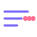
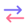

graphemely / Guides
How to split a string into characters with Unicode support
split('') gives you UTF-16 code units and [...str] gives you code points. Neither matches what a person calls a character. graphemes(str) from graphemely splits into grapheme clusters.
The fix, copy and paste
import { graphemes } from '@kwy404/graphemely';
graphemes('abc'); // ['a', 'b', 'c']
graphemes('cafe\u{301}'); // ['c', 'a', 'f', 'e\u{301}']
graphemes('\u{1F44D}\u{1F3FD}!'); // ['\u{1F44D}\u{1F3FD}', '!'], skin tone kept
graphemes('\u{D55C}\u{AE00}'); // 2 Hangul syllables
graphemes('a\r\nb'); // ['a', '\r\n', 'b']Emoji in the code samples are written as JavaScript escapes, for example \u{1F468} for a man. In your own code you can type the emoji directly.
Three ways to split, compared
| Method | Unit | Thumbs up with a skin tone becomes |
|---|---|---|
str.split('') | UTF-16 code unit | 4 broken pieces (lone surrogates) |
[...str], Array.from(str) | Code point | 2 pieces: thumbs up, then a lone skin tone swatch |
graphemes(str) | Grapheme cluster | 1 piece, exactly as displayed |
Using Intl.Segmenter directly
Modern runtimes include Intl.Segmenter, and graphemely uses it when it is there. The direct version is:
const segmenter = new Intl.Segmenter(undefined, { granularity: 'grapheme' });
const chars = Array.from(segmenter.segment(str), (s) => s.segment);graphemely adds a fast path for plain ASCII and Latin-1 text, a built-in fallback for runtimes without Intl.Segmenter, and the operations you usually need next: truncate, slice, reverse, pad and wrap.
Install
npm install @kwy404/graphemelypnpm add @kwy404/graphemelyyarn add @kwy404/graphemelybun add @kwy404/graphemelyWorks in Node 16 and newer, all modern browsers, Deno and Bun. ESM and CommonJS, TypeScript types included, zero dependencies, about 2 kB gzipped. Try your own text in the playground.
FAQ
How do I split a string into an array of characters in JavaScript?
Use graphemes(str) from graphemely, or Intl.Segmenter with granularity grapheme. Avoid split(''), which breaks emoji.
What is the difference between split('') and Array.from(str)?
split('') splits by UTF-16 code unit, so emoji become lone surrogates. Array.from splits by code point, which keeps simple emoji but breaks sequences such as flags and skin tones.
What is a grapheme cluster?
The Unicode name for a user perceived character: one or more code points that display as a single unit, such as a letter with accents, a flag or an emoji sequence.
Related guides

Truncate a string with emoji
Cut text to a length with an ellipsis, never half an emoji.
String length with emoji
Why an emoji has length 2, and how to count what users see.

Reverse a string with Unicode
Reverse text without scrambling flags, accents or emoji.
Substring without breaking emoji
A Unicode safe substring and slice with negative indices.
Remove lone surrogates
Detect and repair the broken halves of emoji.